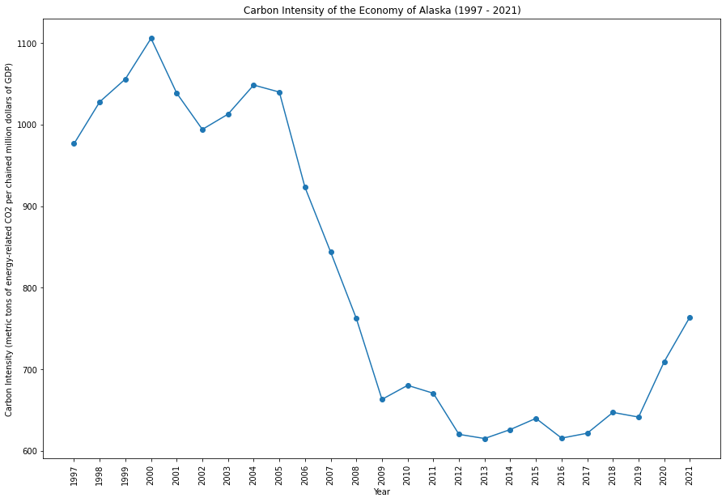

|
|
|  | |
Alaska faces unique environmental challenges due to its remote location and dependence on fossil fuels. While the state has abundant natural resources, it also experiences the impacts of climate change, affecting ecosystems and indigenous communities. Balancing economic interests, such as oil and gas extraction, with environmental conservation is a continual challenge.